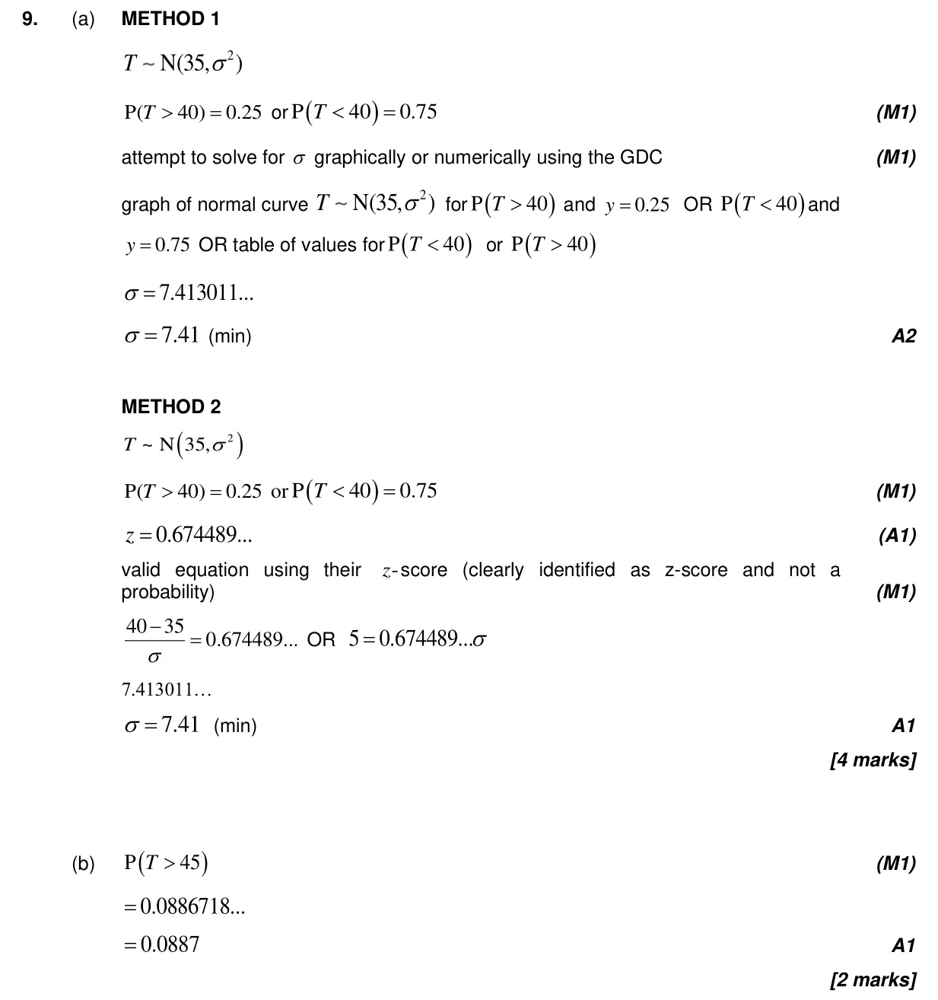
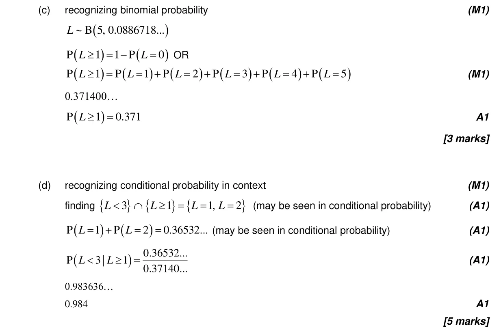
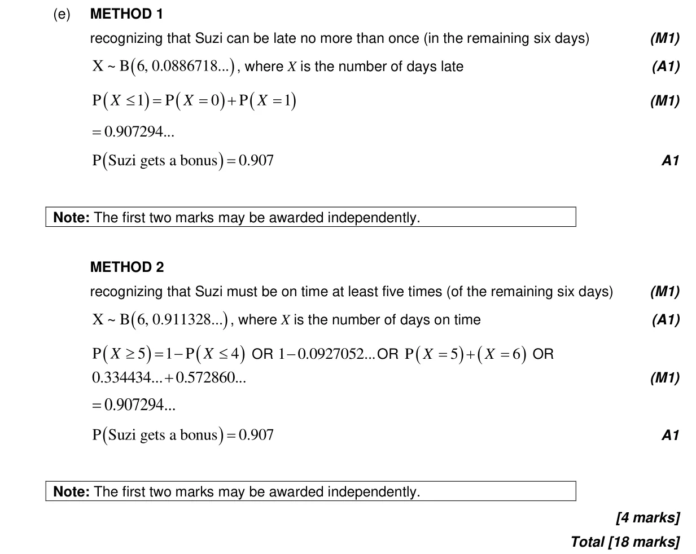

18 marks P2 TZ2 Section B Calculator 4.8 Binomial distribution4.12 Standardization of normal variables4.11 Formal conditional probability and independence4.9 Normal distribution and calculations Question Hide breakdown abcde Markscheme 